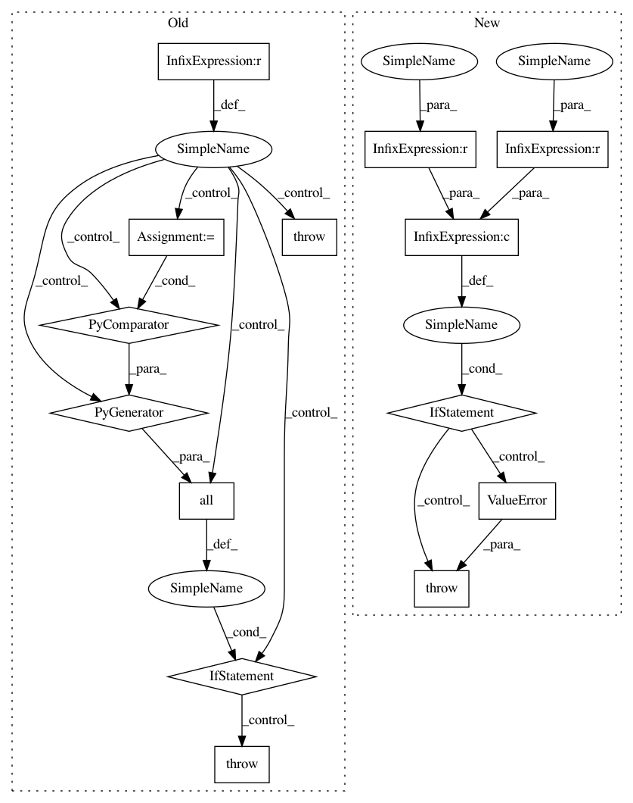

f4001171bc0e65b736ceb55579fbacfcc64c4e85,dlpy/network.py,Network,__init__,#Network#Any#Any#Any#Any#Any#,67
Before Change
name = "model" + str(number_of_instances)
def __init__(self, conn, inputs=None, outputs=None, model_table=None, model_weights=None):
if model_table is not None and any(i is not None for i in [inputs, outputs]):
raise DLPyError("Either parameter model_table or inputs and outputs needs to be set.\n"
"The following cases are valid.\n"
"1. model_table = "your_model_table"; inputs = None; outputs = None.\n"
"2. model_table = None; inputs = input_layer(s); outputs = output_layer."
)
self._init_model(conn, model_table, model_weights)
if all(i is None for i in [inputs, outputs, model_table]):
return
if self.__class__.__name__ == "Model":
if None in [inputs, outputs]:
raise DLPyError("Parameter inputs and outputs are required.")
self._map_graph_network(inputs, outputs)
def _init_model(self, conn, model_table=None, model_weights=None):
conn.loadactionset(actionSet="deeplearn", _messagelevel="error")
After Change
name = None
def __init__(self, conn, inputs=None, outputs=None, model_table=None, model_weights=None):
if (inputs is None or outputs is None) and (inputs is not None or outputs is not None):
raise ValueError("If one of inputs and outputs option is enabled, both should be specified")
self._init_model(conn, model_table, model_weights)
// works for Sequential() as well
if self.__class__.__name__ == "Model":
// 1). Model(s, model_table, model_weights)
In pattern: SUPERPATTERN
Frequency: 3
Non-data size: 14
Instances
Project Name: sassoftware/python-dlpy
Commit Name: f4001171bc0e65b736ceb55579fbacfcc64c4e85
Time: 2019-04-24
Author: wenyu.shi@sas.com
File Name: dlpy/network.py
Class Name: Network
Method Name: __init__
Project Name: tensorflow/datasets
Commit Name: 7c38f339c274bdc4eadde1e651731f456a5d4162
Time: 2018-11-06
Author: rsepassi@google.com
File Name: tensorflow_datasets/core/utils/tf_utils.py
Class Name:
Method Name: assert_shape_match
Project Name: sassoftware/python-dlpy
Commit Name: 1a9adc39fa073de40aa19cf134a35bb55f2d1658
Time: 2019-04-24
Author: wenyu.shi@sas.com
File Name: dlpy/network.py
Class Name: Network
Method Name: __init__
Project Name: sassoftware/python-dlpy
Commit Name: f4001171bc0e65b736ceb55579fbacfcc64c4e85
Time: 2019-04-24
Author: wenyu.shi@sas.com
File Name: dlpy/network.py
Class Name: Network
Method Name: __init__